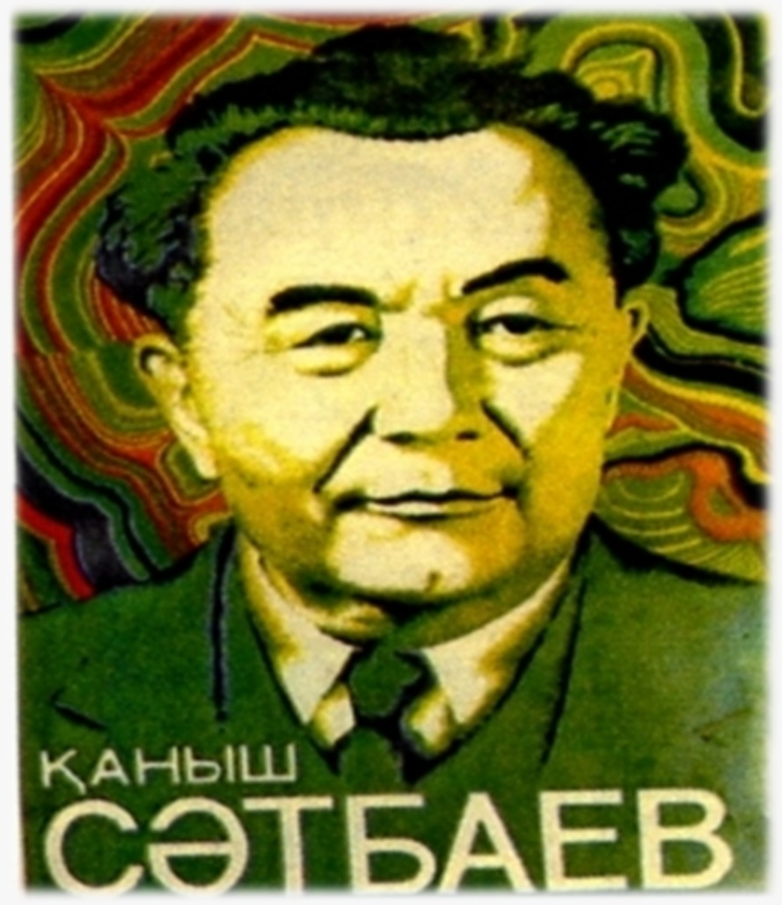

5-ТАПСЫРМА
Қаныш Сәтбаев – ғұлама ғалым, тарихи тұлға
I. Теория
Мақсаты: Қ.Сәтбаевтың өмірбаянымен таныстыру, білімі, ғылыми еңбектері, қоғамдық жұмысы туралы мәлімет беру.
Міндеттері: Қаныш Сәтбаевтың ұлы тұлға дәрежесіне жету негізін анықтау.
Бағалау критерийлері: Қ. Сәтбаевтың өмірі мен қызметі туралы біледі; Қ. Сәтбаевқа ғұлама ғалым, тарихи тұлға, қоғам қайраткері, дарынды, елін сүйген үлкен жүректі адам ретінде баға бере алады.
Дәрістің қысқаша тезистері

Қаныш Имантайұлы Сәтбаев
Өмірбаяны. Қаныш Имантайұлы 1899 жылдың 12 сәуірінде қазіргі Павлодар облысының Баянауыл ауданында (бұрынғы Семей губерниясының Павлодар уезіндегі Ақкелін болысы) Имантай бидің отбасында дүниеге келді. Шын аты - Ғабдул-Ғани. Сауатын ауыл молдасынан ашып, Шорман ауылында орналасқан мектепке қатынайды. Төрт жылдық бағдарламаны үш жылда аяқтайды. 1911 жылдан бастап Павлодардағы 2-сыныпты орыс-қазақ училищесіне аттанады. Аталған білім ордасын мерзімінен бір жыл бұрын бітіріп шығады.
Білімі. 1914 жылы Семей мұғалімдер семинариясына түсіп, оны төрт жылда аяқтап, бастауыш мектептерге орыс тілінен сабақ беруге құқық беретін куәлікке ие болады. 1918 жылдың күзінде Алаш қалашағында ашылған, ауылдық қазақ мектептері үшін мұғалім болады. Томск технология институтының математика факультетіне оқуға дайындала бастайды. Оқуға түсу үшін математика мен ағылшын тілінен емтихан тапсыруы керек. Осы мақсатта Томск университетінің математика факультетін бітірген Семейде еңбек ететін Ғарифолла Нығметулиннен қыс бойы математика пәні бойынша қосымша сабақ алады.
Атқарған қызметі. 1920 - 1941 жылдары - Баянауылда халық судьясы, «Атбастүстімет» тресі геология бөлімінің, Қарсақтай мыс комбинаты геологиялық барлау бөлімінің бастығы, комбинаттың бас геологы қызметтерін атқарған. 1941-1952 жылдары КСРО Ғылым академиясы Қазақ бөлімшесінің құрамындағы Геология ғылымдары институтының директоры, КСРО Ғылым академиясының Қазақ бөлімшесі Төралқасы төрағасының орынбасары, төрағасы, Қазақстан Ғылым академиясының президенті болған. 1952 жылы - әміршілдік жүйенің тарапынан қысымға ұшырап, қызметінен төмендетіліп, Қазақ КСР Геология институтының директоры болып тағайындалған. 1955 жылы - Қазақ КСР Ғылым академиясының президенті болып қайта сайланып, өмірінің соңына дейін осы қызметті атқарған.
Ғылым жолында. Сәтбаевтың геология ғылымында, мәдениет саласында, тарихта қалдырған еңбектері мол. Ш.Уәлиханов жазған түсініксіз араб, татар сөздерінен тазартып, қазақ тілінің жаңа орфографиясының негізінде қайтадан дайындаған. Ғұлама ғалым Ұлытау өңіріндегі тарихи, мәдени, археологиялық ескерткіштерді зерттеді. Жезқазған – Ұлытау өңірінен көптеген этнографиялық мұраларды жинап, «Жезқазған ауданындағы көне заман ескерткіштері» атты еңбегін жазған. Онда Ұлытау өңірі ежелгі металлургия орталығы мен саяси орталығы екендігі де толық дәлелденген. Қазақ орта мектебінің төменгі және жоғары сынып оқушыларына арналған «Алгебра» оқулығын дайындаған. 1931 жылы басылған А.Затаевичтің «500 қазақ әндері мен күйлері» жинағына Сәтбаев қазақ халқының 25 әнін өзі орындап, орыс тілінде ғылыми түсініктеме беріп енгізген.
Бақылау сұрақтары:
- Қаныш Сәтбаев кім?
- Ол қай жылы және қайда дүниеге келді?
- Ол қандай оқу орындарын бітірді?
- Қаныш қандай пәннен сабақ берді?
- Екінші курстан кейін кіммен бірге дала жұмыстарына қатысады?
- 1943 жылы кім болып сайланды?
- Қанша ғылыми еңбектер жазды?
- «Жезқазған руда кеніші» деген ғылыми еңбегі үшін немен марапатталды?
- Өзінің еңбек жолын неден бастады?
- Қ.Сәтбаев қай жылы, қайда қайтыс болды? Қайда жерленген?
Тапсырманы орындау бойынша нұсқаулық (орындау тәртібі):
- Мәтінді оқиды;
- Қаныш Сәтбаевтің өмірбаянын біледі;
- Ғалымның атқарған қызметі жайлы баяндайды;
- Қ. Сәтбаевтің ғылым жолында қосқан үлесі туралы баяндап береді;
- Сұрақтарға жауап береді.
Тапсырмадан күтілетін нәтиже: Берілген ақпаратты оқу, сұрақтарға жауап беру.
Тапсыру формасы: Ауызша. Презентация жасап қорғау.
Модуль / пән бойынша ұсынылатын әдебиеттер тізіміне сілтемелер: Okulyk.kz - Қазақ тілі (10-сынып)
II. Практика (СӨЖ № 5.2)
Ғылыми-зерттеу жұмыстары
Ұлытау және Жезқазған
1-тапсырма. Сәйкестендіру тесті
Тапсырма: ХХ ғасырдың 20-30 жылдарындағы білім беру жүйесі мен ғылым бойынша сәйкестендіру тестін орындаңдар.
- Сауатсыздық жойылсын қоғамы ұйымдастырылды — 1924 ж.
- Алматы Қазақ кен металлургия институты ашылды — 1934 ж.
- Республикада алғашқы дыбысты «Амангелді» фильмі қай жылы түсірілді — 1938 ж.
- Қазақстан халықтарының арасында жалпыға бірдей оқу міндетті болған жыл — 1930-1931 жж.
- Алматы ауыл шаруашылық институты қай жылы ашылды — 1930 ж.
2-тапсырма. Мәтінді диалогке айналдыру
Тапсырма: Берілген өмірбаяндық мәтінді оқып, диалог форматына айналдырыңдар.
3-тапсырма. «Домино» әдісі
Тапсырма: «Домино» әдісі бойынша сөз тіркестерін дұрыс құрастырып, кестені толтырыңдар:
Көрнекті — металлогения мектебінің — минералдық — мамандығы — зерттеу
4-тапсырма. Тест сұрақтары
Тапсырма: Берілген тест сұрақтарына жауап беріңдер.
- Академик Қаныш Сәтбаев ...
а/ бір ғылымды ғана игерген
б/ сан алуан ғылымдарды игермеген
в/ сан алуан ғылымды игерген - Ғалым .... оқулығын жазған.
а/ геометрия
б/ алгебра
в/ геология - Қ.Сәтбаев ..... дүниеге келген
а/ Павлодарда
б/ Семейде
в/ Екібастұзда - Қаныш Сәтбаев - ....
а/ президент
б/ ғалым
в/ оқытушы - Ол – ...... ғылыми еңбектің авторы.
а/ 640
б/ 220
в/ 65
Тапсыру формасы: Жазбаша түрде.
Модуль / пән бойынша ұсынылатын әдебиеттер тізіміне сілтемелер: Okulyk.kz - Қазақ тілі (10-сынып)
III. Бағалау парағы
| № | Тапсырма | Дескрипторлар | Ұпай саны | Студенттің ұпай саны |
|---|---|---|---|---|
| 1 | Бақылау сұрақтары: |
• Мәтінді оқиды • Қаныш Сәтбаевтің өмірбаянын біледі • Қ. Сәтбаевтің ғылым жолында қосқан үлесі туралы баяндайды • Сұрақтарға жауап береді |
5 балл 10 балл 10 балл 10 балл |
|
| 2 | Сәйкестендіру тесті (ХХ ғасырдың 20-30 жылдарындағы білім беру жүйесі мен ғылым). | • Сәйкестендіру тестін орындаңдар | 10 балл | |
| 3 | Мәтінді диалогке айналдырыңдар. |
• Мәтінді оқыңдар; • Мәтінді диалогке айналдырыңдар |
5 балл 10 балл |
|
| 4 | «Домино» әдісі бойынша сөз тіркесін құрастырыңдар. |
• Сөз тіркестерін дұрыс құрастырады; • Кестені толтырыңдар |
10 балл 10 балл |
|
| 5 | Тест сұрақтарына жауап беріңдер. | • Тест сұрақтарына жауап береді | 20 балл | |
| Барлығы: | 100 балл | / 100 | ||